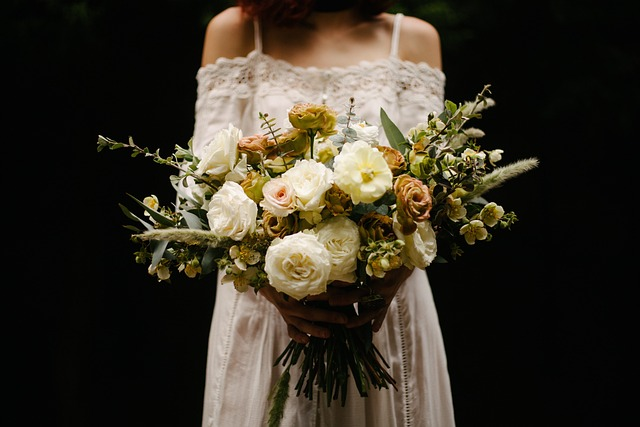
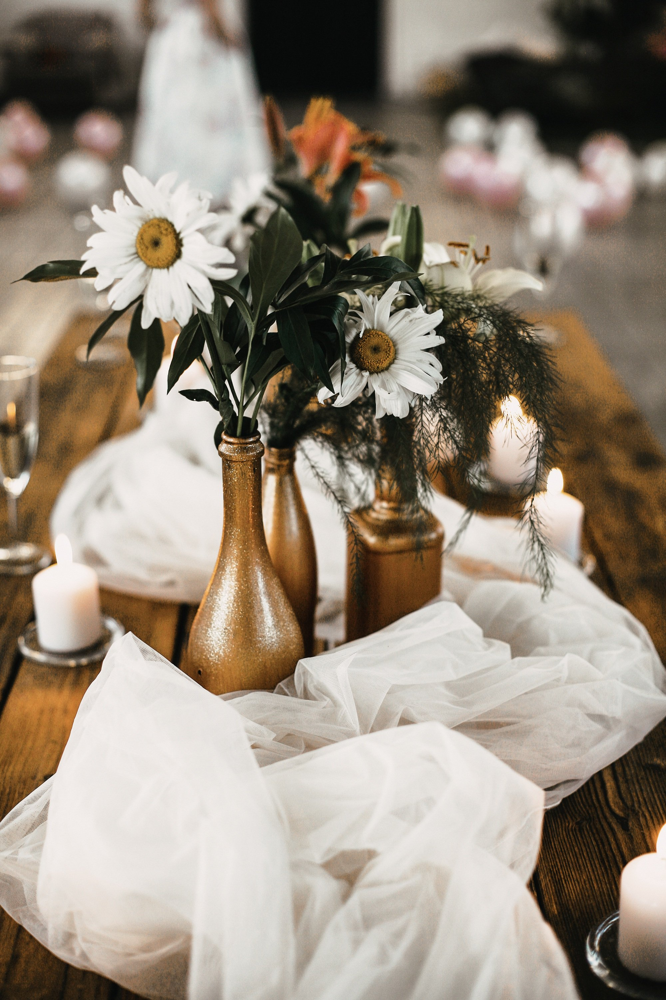
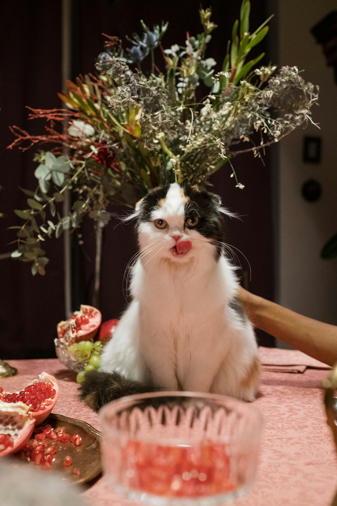
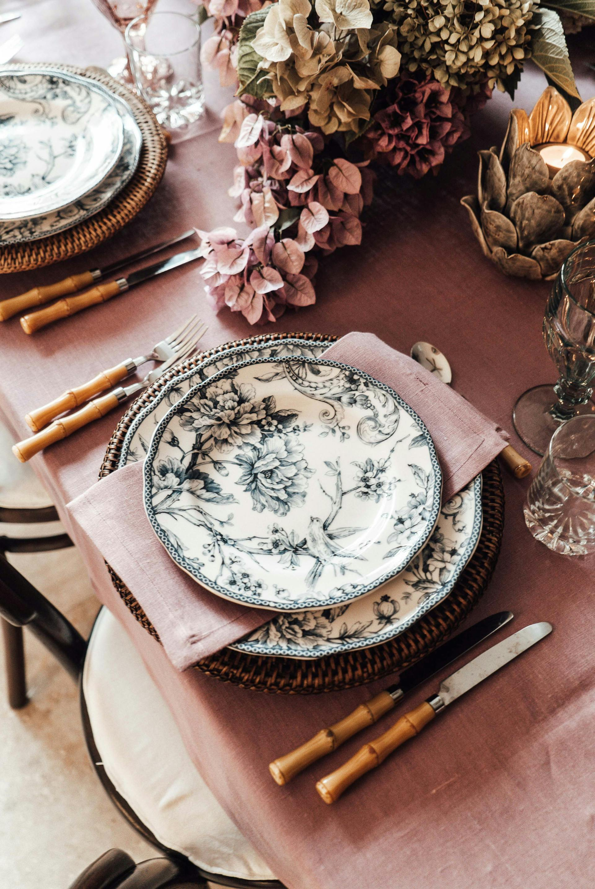
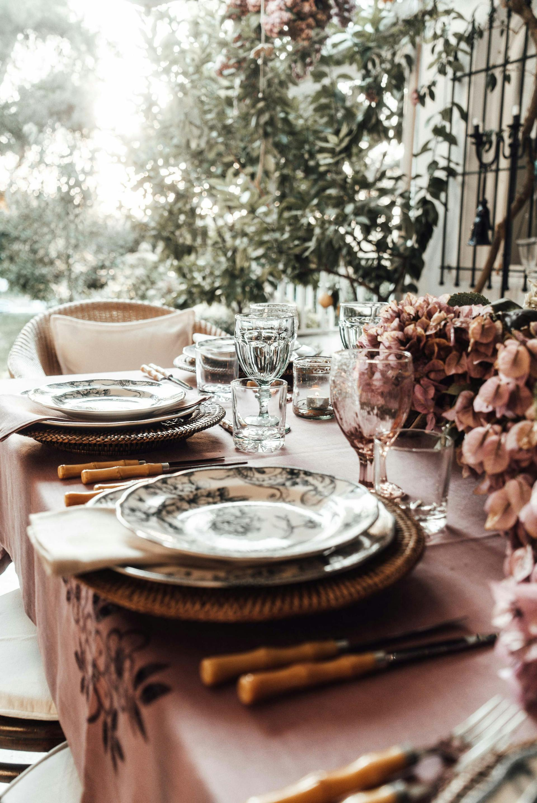
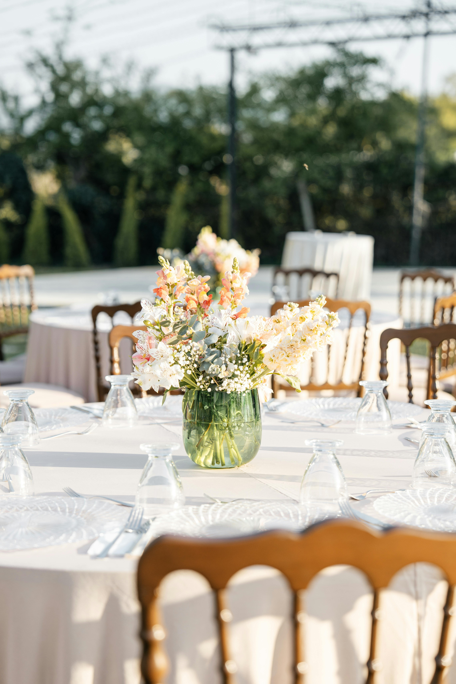
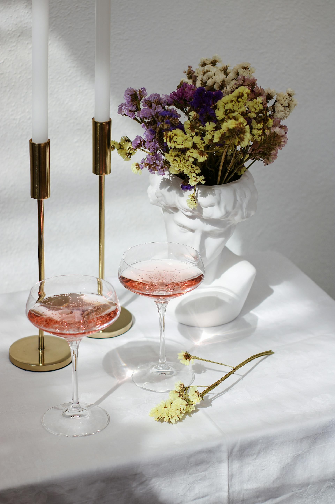
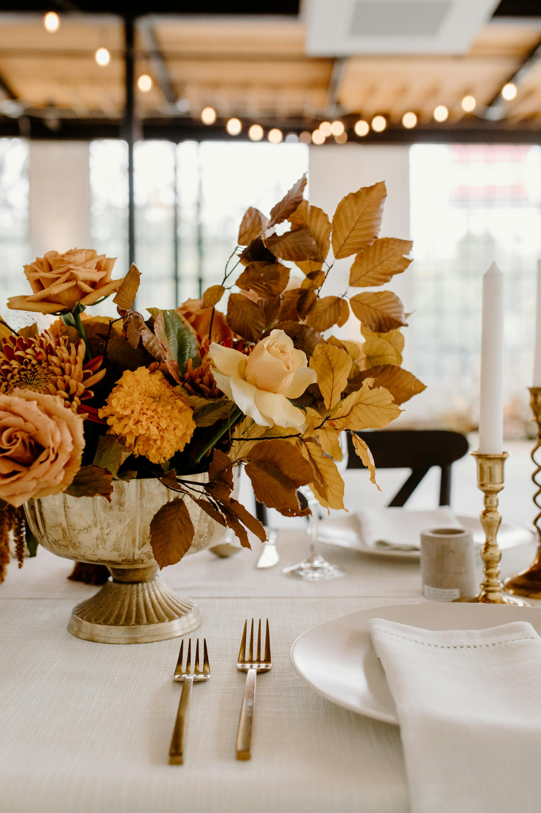
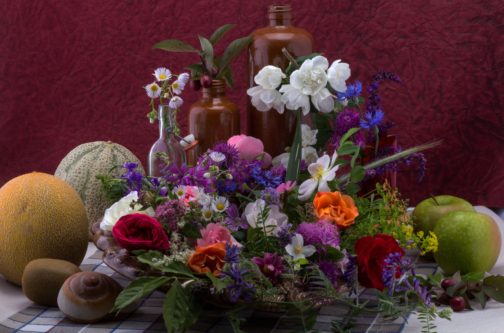

Galéria
Tekintse meg válogatásunkat, ahol megmutatjuk, mit jelent számunkra a virágkötészet művészete. Minden csokor és kompozíció mögött gondos tervezés, kreativitás és a természet iránti tisztelet áll.
Mit talál itt?
- Esküvői virágcsokrok, melyek különleges pillanatokat varázsolnak még emlékezetesebbé.
- Egyedi asztali dekorációink és kompozícióink, amelyek minden alkalomhoz illenek.
- Szezonális kompozíciók otthoni vagy irodai dekorációhoz.
Lapozzon végig galériánkon, és találja meg az Ön számára leginspirálóbb megoldásokat. Ha valamelyik alkotás elnyeri tetszését, vagy személyre szabott elképzelése van, forduljon hozzánk bizalommal!
Esküvői virágcsokrok



Asztali dekorációk

.jpg "Rusztikus dekor cipővel")
.jpg "Rusztikus dekor könyvekkel")






Szezonális dekorációink


